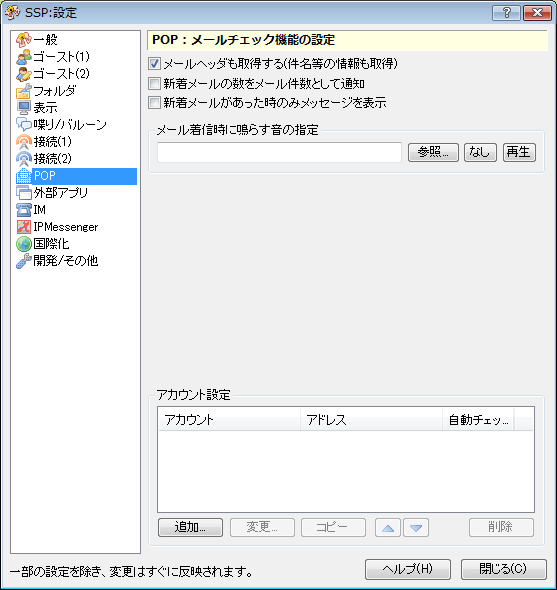

設定：POP
画像左側のリストをクリックで、それぞれのダイアログのページに対応する解説のページへ移動します。

このページでは右クリックメニューの「設定」サブメニューにある項目「本体設定」で開くダイアログの、「POP」ページについて解説しています。
SSPのメールが届いているかをチェックする機能に関する設定です。
各項目の解説
- メールヘッダも取得する
- ゴースト側でメールヘッダ（タイトルなど）を解析できるように、メールヘッダも取ってきます。
ゴーストにヘッダを渡したくない場合は、OFFにしてください。
- 新着メールの数をメール件数として表示
- 通常、「メールが××通あります」とゴーストが言ってくれるはずですが、この数はサーバ上に残っているメールの数で、新着メールの数ではありません。
この設定を有効にすると、サーバ上にあるメールの数ではなく新着メールの数を喋るようになります。
- 新着メールがあった時のみメッセージを表示
- 新着メールが存在した時のみ、ゴーストがメールがあったことを喋ってくれるようになります。
メール着信時に鳴らす音の設定
新しくメールが届いた場合に、ここで設定した音声ファイルを再生します。
アカウント設定
アカウントを追加したい場合は「追加」ボタン、削除したい場合は下のリストから選んで「削除」ボタンを押してください。
また、設定を修正したい場合は、「変更」ボタンを押してください。
- アカウント名
-
自分の分かりやすい適当な名前をつけてください。これがメールチェックメニューに現れます。
- 種類
- APOP/通常のPOP3/IMAP4に対応しています。
プロバイダやその他メールサービスの利用説明書を読んで設定してください。
通常はPOP3、もしくはAPOPで接続できると思います。
- サーバ
-
あなたのメールを保管してあるPOPサーバの場所を入力します。
通常、プロバイダの方からもらった書類に「POPサーバアドレス」といったような項目があるはずなので、それを(半角で)書き写してください。
- ポート番号
-
通常は標準のままでかまいません。
特別にポート番号を指定されている場合のみ変更してください。
- ユーザID/パスワード
-
あなたのメールのユーザ名とパスワードを入力します。
インターネット接続用のユーザ名/パスワードとは通常違ったものが割り当てられているはずですので注意してください。
- サーバへの接続にSSL/TLSを使う
-
メールサーバに接続する際に、SSL/TLSで暗号化して情報を保護します。
通常は設定しなくても接続できるかと思いますが、GMail等常に設定する必要がある場合もあります。
- SSL/TLSのサーバ証明書を検証する
-
上記SSL/TLS機能の追加設定項目です。通常はONのまま使用してください。
一部無料サービス等、これをOFFにしないと通信エラーになる場合があります。
- 自動チェック
-
指定した時間おきに自動でメールが届いているかチェックします。
あまり短い時間を設定しないようにしてください。
下部のボタン
- ヘルプ
-
本体設定ダイアログの、設定中のページのヘルプ（つまりこのページ）を開きます。
ダイアログ右上の「？」マークも同様です。
- 閉じる
-
本体設定ダイアログを閉じます。
ダイアログ右上の「×」マークも同様です。